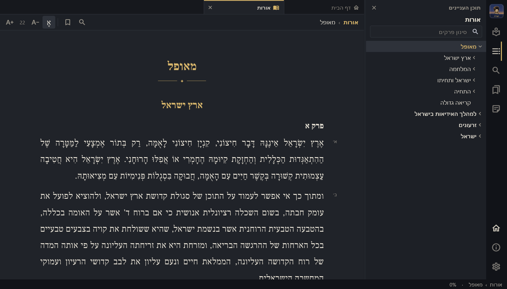

כתבי הראי״ה
ספרי מרן הרב אברהם יצחק הכהן קוק זצ״ל
ספרייה חינמית של כתבי הרב, עם חיפוש מלא בכל הספרים, קריאה נוחה, הערות אישיות וסימניות.
גרסה {{VERSION}} (טרום־הפצה) · Windows 64-bit · ללא התקנה · עובדת בלי אינטרנט

כתבי הראי״ה

מה בתוכנה
חיפוש מלא
בכל הספרים בבת אחת, ללא תלות בניקוד ובגרשיים.
קריאה נוחה
לשוניות, תוכן עניינים, ניקוד לבחירה, גופנים וערכה בהירה או כהה.
הערות וסימניות
מסמנים טקסט, קליק ימני ← „הוספת הערה”. ממשיכים מהמקום שבו הפסקתם.
בלי אינטרנט
כל הספרים כלולים בתוכנה. גיבוי וייבוא של הנתונים האישיים בקובץ.
הספרייה
{{LIBRARY}}